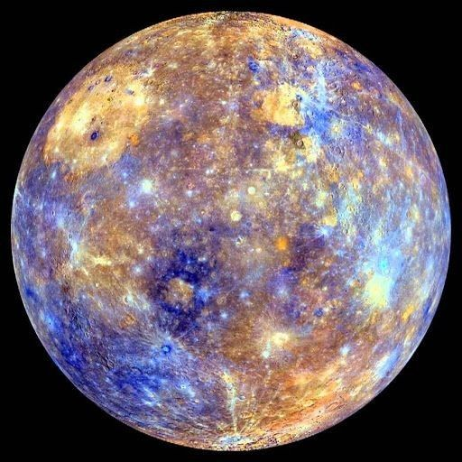

Mercury: The Swiftest Planet
Introduction

Mercury is the smallest planet in the solar system and the closest to the Sun. Named after the swift Roman messenger god, it moves rapidly around the Sun. It experiences extreme temperature variations due to its thin exosphere and slow rotation.
Formation & Evolution
Mercury formed ~4.5 billion years ago from the early solar nebula. Its large iron core dominates its interior. Theories suggest collisions or solar heat stripped lighter materials, leaving a dense, metal-rich planet.
Over time, Mercury cooled, forming lobate scarps. Ancient volcanic activity resurfaced parts of the planet, but today it is geologically quiet, with surfaces shaped by meteoroid impacts and solar radiation.
Key Characteristics
- Small rocky planet with cratered surface
- Massive iron core
- Surface temps: ~800°F to -290°F
- Water ice exists in shadowed craters
- No moons or rings
- Surface covered with impact craters
- Slowly shrinking due to core cooling
- Global magnetic field, weaker than Earth's
Mercury's Exosphere
Mercury has a very thin exosphere made of atoms ejected from its surface by solar wind and micrometeoroid impacts. It contains hydrogen, helium, oxygen, sodium, potassium, and calcium. The exosphere is constantly changing, replenished by surface-Sun interactions.
Orbits & Motion
- Orbital period: 88 Earth days (fastest in solar system)
- Rotation period: 59 Earth days
- 3:2 spin-orbit resonance → 1 solar day = 176 Earth days
- Extreme day-night temperature variations
Key Missions
- Mariner 10 (1973–1975): First spacecraft to visit Mercury; mapped 45% of surface, discovered magnetic field.
- MESSENGER (2004–2015): Orbited Mercury, mapped 100% of surface, discovered water ice, analyzed core.
- BepiColombo (2018–Present): ESA/JAXA mission to study Mercury’s composition, magnetosphere, and internal structure; orbit insertion planned for 2025/2026.